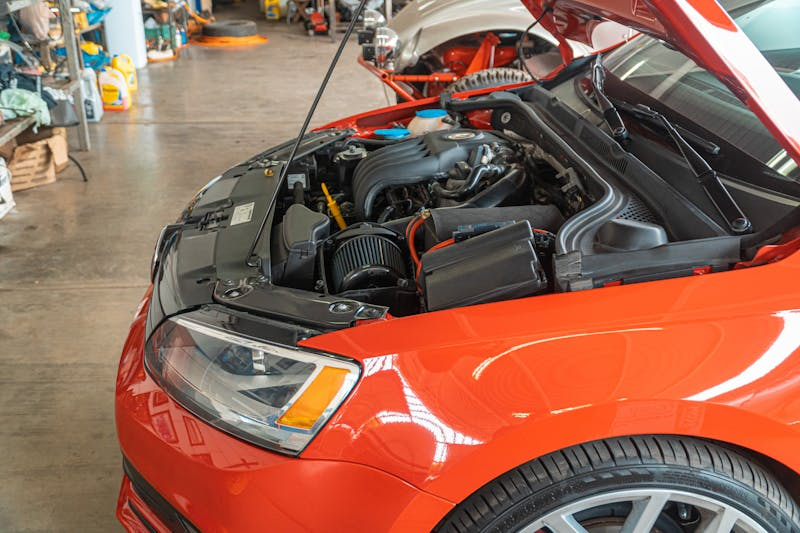

Transmission Service & Repair
Keep your transmission shifting smoothly — avoid the most expensive repair on the road.
Transmission Repair & Service in Cedar Rapids
Transmission problems can be some of the most expensive repairs on any vehicle — but catching them early makes a huge difference. If you're noticing delayed shifts, slipping, hard shifting, or a burning smell, bring your vehicle to Cedar Automotive. We'll diagnose the issue accurately and give you honest options before any work begins.
We service both automatic and manual transmissions on all makes and models. Our diagnostic equipment reads transmission-specific fault codes and monitors real-time shift data, helping us identify whether you need a simple fluid change or a more involved repair. For European vehicles with complex automatic and dual-clutch transmissions, we have the specialized tools and knowledge to handle the job right.
Regular transmission fluid changes are one of the most overlooked maintenance items — and one of the most important. Fresh fluid keeps your transmission cool, clean, and shifting properly. We recommend following your manufacturer's service interval, especially in stop-and-go traffic or Iowa's temperature extremes.
Transmission Services We Provide
- Transmission fluid change (automatic and manual)
- Transmission diagnostic scanning
- Shift quality diagnosis and repair
- Transmission filter replacement
- Torque converter diagnostics
- Clutch inspection and replacement (manual)
- Transfer case fluid service (AWD/4WD)
- CVT transmission fluid service
- European dual-clutch and automated manual service

Why Choose Cedar Automotive for Transmission Work?
Accurate Diagnosis
We read manufacturer-specific codes and live data — no guessing, no unnecessary part swaps.
Honest Recommendations
We explain your options clearly and let you decide. No pressure to approve work you don't need.
All Transmissions
Automatic, manual, CVT, dual-clutch — we service all types across domestic, Asian, and European vehicles.
Related Services
Transmission Service by Location
Frequently Asked Questions
What are signs of transmission problems?
Warning signs include slipping gears, delayed or rough shifting, transmission fluid leaks, unusual noises, or a burning smell. If you notice any of these, bring your vehicle in for a diagnostic check.
How often should transmission fluid be changed?
Most manufacturers recommend transmission fluid changes every 30,000 to 60,000 miles. European vehicles often have specific intervals. We'll check your owner's manual and recommend the right schedule.
Do you work on both automatic and manual transmissions?
Yes, we service both automatic and manual transmissions on all makes and models, including European vehicles with dual-clutch and CVT transmissions.